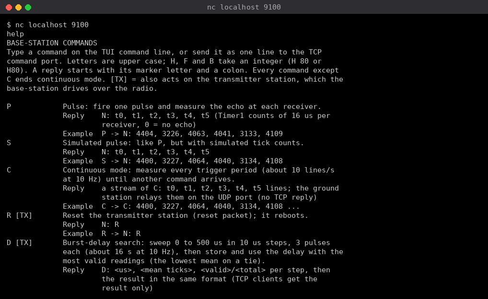
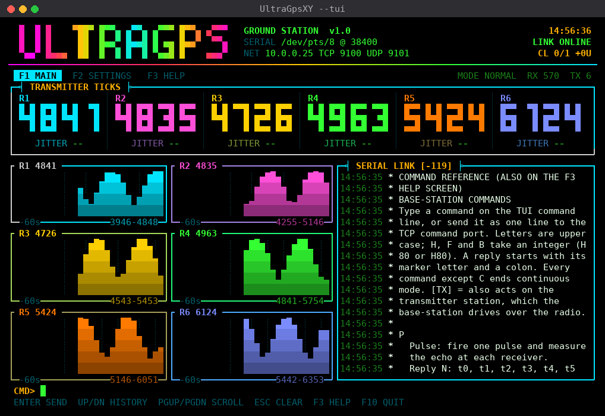
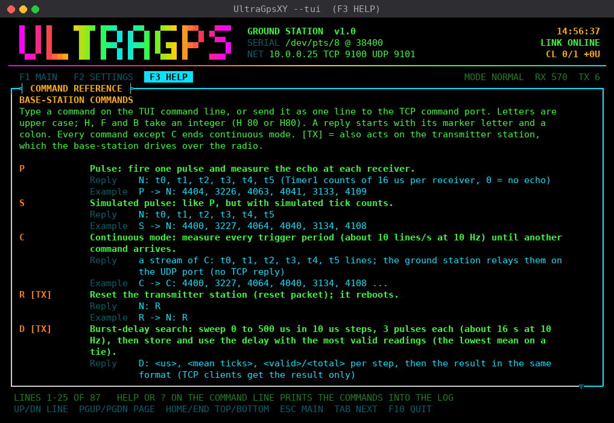
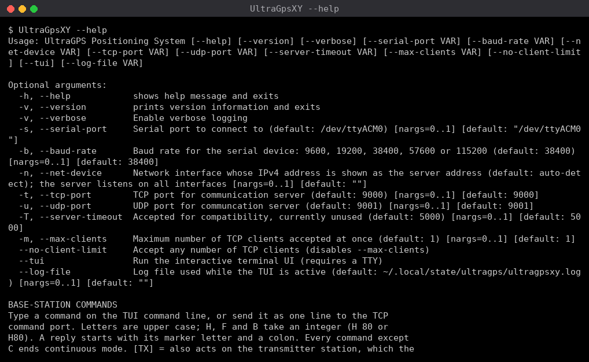

Usage¶
Run the program directly (if installed via the .deb, UltraGpsXY is on your
PATH; otherwise use ./build/UltraGpsXY):
UltraGpsXY [options]
On startup it prints a banner summarising the resolved serial port, baud rate, IP address, and ports, then initialises the Comms module (serial link) and starts the Server module.
Command-line options¶
All configuration is done through flags — there is no configuration file read at runtime.
| Flag | Argument | Default | Description |
|---|---|---|---|
-v, --verbose |
— | off | Enable verbose (debug-level) logging at runtime |
-s, --serial-port |
path | /dev/ttyACM0 |
Serial port for the base-station Arduino |
-b, --baud-rate |
uint | 38400 |
Baud rate; one of 9600, 19200, 38400, 57600, 115200 |
-n, --net-device |
name | (auto) | Network interface whose IPv4 address is shown as the server address (default: auto-detect). The server always listens on every interface |
-t, --tcp-port |
uint | 9000 |
TCP port for the command server |
-u, --udp-port |
uint | 9001 |
UDP port for the continuous data stream |
-T, --server-timeout |
uint (ms) | 5000 |
Accepted for compatibility; currently unused |
-m, --max-clients |
uint | 1 |
Maximum number of TCP clients accepted at once. Extra connections receive E: server full and are closed |
--no-client-limit |
— | off | Accept any number of TCP clients (the behaviour before the limit existed) |
--tui |
— | off | Run the interactive terminal UI (needs a TTY) |
--log-file |
path | ~/.local/state/ultragps/ultragpsxy.log |
Where logs go while the TUI owns the terminal |
UltraGpsXY --help lists these options and then prints the command reference
(the same text as the help command, see Command reference).
Examples¶
Run with defaults:
UltraGpsXY
Custom serial port and baud rate:
UltraGpsXY --serial-port /dev/ttyUSB0 --baud-rate 115200
Report a specific interface's address, use other ports, with verbose logging:
UltraGpsXY --net-device eth0 --tcp-port 9100 --udp-port 9101 --verbose
Runtime verbose vs. compile-time verbose
--verbose raises the runtime log level to debug for direct spdlog
calls. In any build this prints every message the ground station receives:
TCP commands from clients, serial responses to normal commands, and serial
continuous-mode data. The SPDLOG_* macros (fine-grained loop tracing) are
separate and are only compiled in when the binary is built with
-DVERBOSE_LOGGING=ON (see Installation).
Command reference¶
Sending help or ? (any case) prints the reference of every command the
ground station accepts: each base-station command with its syntax, what it
does, its reply format and an example, plus the ground station's own
behaviour. The ground station answers it itself and never sends it to the
base-station, also while the base-station is booting or the serial port is
closed. It works everywhere a command can be given:
-
TCP command port: the reference comes back as text lines, to the client that asked only (other replies go to every connected client).

helpsent fromnc. This test server was started with-t 9100; by default the command port is 9000. -
TUI: on the MAIN screen command line, or as the settings RAW COMMAND, it prints the reference into the serial link log (scrolled to its first line; PgDn reads on). The F3 HELP screen shows it too, with the TUI keys.

helptyped on the MAIN screen command line: the reference is printed into the SERIAL LINK log on the right.
The F3 HELP screen.
-
Command line:
UltraGpsXY --helpprints it after the option list.
UltraGpsXY --help: the option list, then the command reference.
Client limit¶
By default only one TCP client (the control program) is accepted. The limit applies only to new connections; lowering it never drops existing sessions. UDP peers are not limited: UDP has no connection, and the control program registers with a single datagram. The limit can be changed or switched off at runtime from the TUI settings screen.
Terminal UI¶
UltraGpsXY --tui -s /dev/ttyACM0
MAIN screen (F1)
- Block-digit tick readout for each of the six receivers.
NO ECHOmeans a 0 reading. - Under each readout,
JITTER <n>(JIT <n>when the cell is narrow): the difference, in ticks, between the mean of that receiver's non-zero readings of the last 1 s and the mean of those of the last 10 s (exact rolling windows; 0 = no echo is left out). A higher number means the readings are moving, i.e. the transmitter is changing a lot. It is green below 5, amber below 20 and red from 20, and shows--while either window has no reading (for example 1 s after the last reading, when not in continuous mode). - One small graph per receiver (R1 to R6) of its ticks over the last 60 s. Each graph shows the per-second maximum, scales itself to that receiver's own minimum and maximum, and has the receiver's current reading in its title and the scale range in its bottom border. A red dot marks a second in which that receiver had no echo. The graphs form a grid that fits the terminal: 3 x 2 at 80x24 and 2 x 3 on larger terminals such as 160x50.
- The serial link log. Lines marked
>were sent to the base-station,<were received from it,!are log messages and*are TUI messages. - A command line: type any base-station command (see the table below) or any
raw line, then press Enter.
helpor?prints the command reference into the log instead (nothing is sent).
SETTINGS screen (F2 or Tab)
- Select an item with Up/Down (PgUp/PgDn jump 8 items, Home/End go to the first and last item), press Enter to edit it, type the value, and press Enter to apply it. Esc cancels. The list scrolls (arrows on the frame show there is more), and selecting the last item of a section also brings the status rows below it into view.
- The list has four sections: SERIAL LINK (HOST SIDE), NETWORK SERVER, BASE STATION (base-station commands, then its status) and TRANSMITTER STATION SETTINGS (the transmitter reset, burst delay and trigger rate, then their status).
- Choice items (baud rates, log level) also cycle with Left/Right.
- Changing the host baud rate or serial port closes and reopens the host side of the port only. The TUI then waits about 7 s for the Uno to reboot, because opening the port resets it through DTR. The host baud rate must match the rate stored in the base station (38400 by default); it is shown red when the base station has reported a different rate.
-
BASE-STATION BAUD (B) sends
B <baud>. The base station stores the rate, repliesB: <baud>at the old rate and then reboots at the new rate (any valid rate reboots it, even the one in use). The ground station shows BOOTING and sends nothing for the same 7 s it waits after opening the port; only then does it switch the host side to the new rate. It switches in place on the open port: closing and reopening it would pulse DTR and reboot the Uno a second time. If the in-place switch fails, it reopens the port and waits out that boot too. Then it re-queries the settings. The rate is kept across resets. QUERY BAUD sendsB 0, which changes nothing and reports the rate in force. The same happens when a TCP client sendsB, and afterMwhen the stored rate was not 38400 (the base station then reboots back to 38400). -
The panel on the right shows the server IP, ports, client count and limit, and each connected TCP client and UDP peer with how long it has been connected.
- Commands are sent with Enter. Reset (R), delay search (D), default delay (E) and reset all settings (M) ask for confirmation first.
- TRANSMITTER STATION SETTINGS groups settings that are part of the base
station (its commands, stored in its EEPROM) but apply to both the base
station and the transmitter station. The transmitter has no serial command
interface of its own; the base station passes these settings on to it:
- RESET (R) sends a reset packet; the transmitter reboots.
- DELAY SEARCH (D) and DEFAULT DELAY (E) set the burst delay, which every trigger packet carries (the transmitter waits that long after its timer match before firing).
- TRIGGER HZ (F) sets the trigger rate of both stations; the base station
sends the new Timer1 TOP to the transmitter, which stores it in its
EEPROM and reboots.
Mand every base-station boot send the rate too. - Sync packets keep the two Timer1s phase-locked; nothing to configure.
- The NOTE rows at the top of that section say the same: SET ON BASE-STATION, APPLIES TO BASE + TRANSMITTER.
- SAMPLING MS (H) takes a value from 1 to 80 % of the trigger period (80 ms at
10 HZ) and sends
H <ms>. Values outside that range are rejected in the TUI (the upper limit follows the last reported trigger rate). QUERY SAMPLING sendsH 0: the firmware changes nothing for a value out of range and replies with the sampling time still in force, so this reads the setting without changing it. - TRIGGER HZ 1-50 (F) takes a rate from 1 to 50 Hz and sends
F <Hz>. The base station restarts its trigger timer, tells the transmitter station (which stores the rate and resets), and sets the sampling time to its maximum, 80 % of the new period. QUERY RATE sendsF 0, which changes nothing and reports the rate, Timer1 TOP and sampling time in force. This is experimental as the system is meant to be used at a rate of 10HZ. - The BASE STATION status rows show the sampling time and its Timer1 counts
(16 us each, from
HorF), the stored baud rate (fromB, compared with the host's) and the last reply line. The TRANSMITTER STATION SETTINGS status rows show the burst delay in force (fromEor aDresult), the trigger rate and Timer1 TOP (fromF), when a rate packet (F <1..50>orM) and a reset packet (R) were last sent, the last delay-search result and how manyD:lines the current or last sweep has produced.?means the base station has not reported that value yet. AfterMthe status shows the firmware defaults (2000 us, 80 ms / 5000 counts, 10 Hz / TOP 6249).
HELP screen (F3)
- The command reference (the same text as the
helpcommand), then the TUI keys and what the MAIN screen readouts mean. Up/Down scroll a line, PgUp/PgDn a page, Home/End go to the top and the bottom, Esc goes back to MAIN.
Base-station commands (firmware base-station/src/command_control.*). All
of them except C end continuous mode. TCP clients can send the same commands.
help or ? prints the full reference (see Command reference).
| Command | Argument | Reply | Effect |
|---|---|---|---|
P |
— | N: t0, t1, t2, t3, t4, t5 |
One pulse; tick count per receiver, 0 = no echo |
S |
— | N: t0, ..., t5 |
One pulse with simulated tick counts |
C |
— | C: t0, ..., t5 stream |
Continuous mode, about 10 lines/s |
R |
— | N: R |
Reset the transmitter station over the radio (the base station may reset itself too, if its EEPROM setting says so) |
D |
— | D: <us>, <mean>, <valid>/<total> per step, then the result in the same format |
Burst-delay sweep, 0 to 500 us in 10 us steps by default (about 16 s); stores the winning delay |
E |
— | E: <us> |
Store the default burst delay (2000 us) |
M |
— | M: OK |
Reset every EEPROM setting to its default (including the 10 Hz trigger rate, re-sent to the transmitter). If the stored baud rate was not 38400, the base station reboots at 38400; the ground station waits the boot time (7 s), then switches the host side back to 38400 |
H |
<ms> integer, H 80 or H80 |
H: <ms>, <Timer1 counts> |
Set the sampling time, 1 ms to 80 % of the trigger period (at most 1000). Counts = ms x 1000 / 16 (H: 80, 5000). Out of range changes nothing (a query) |
B |
<baud> integer, B 57600 or B57600 |
B: <stored baud> (the new rate after a change, the current one for a query) |
Set the base-station serial baud rate (stored in EEPROM). The reply goes out at the old rate, then the base station reboots at the new rate. The ground station waits the boot time (7 s), sending nothing, then switches the host side to the new rate in place if it supports it (9600, 19200, 38400, 57600, 115200). Rates the firmware accepts but the host cannot open (e.g. 14400, 250000) are refused by the ground station and never sent; TCP clients get ERR: B <baud> unsupported by host. An invalid rate changes nothing and does not reboot (a query, e.g. B 0) |
F |
<Hz> integer, F 20 or F20 |
F: <Hz>, <Timer1 TOP>, <sampling ms> |
Set the trigger rate on both stations, 1 to 50 Hz (default 10, F: 10, 6249, 80). TOP = round(62500 / Hz) - 1. The transmitter station stores the rate and reboots into it when the rate is new to it; the sampling time is set to its maximum, 80 % of the new period. Out of range changes nothing (a query) |
The firmware ignores a line it cannot decode (unknown letter, or H without a
number) and sends no reply. R, D, E, F and M also act on the
transmitter station over the radio. The ground station drops such lines from TCP
clients. The TUI sends them anyway, so any reply shows in the log.
- A port or baud change that fails to open restores the previous port and baud.
Keys: F1/F2/F3 switch to the MAIN, SETTINGS and HELP screens and Tab goes to the next one, PgUp/PgDn scroll the log, Up/Down recall command history, Ctrl-L redraws, and F10, Ctrl-Q or Ctrl-C quit and restore the terminal.
tmux / zsh notes¶
Inside tmux 3.4 or newer the TUI needs the tmux build
(./build.sh build --tmux, or the ultragps-xy-tmux package). The default
bash build hangs at startup there. In a plain terminal both builds work.
The TUI only needs a UTF-8 terminal and a working terminfo entry
(tmux-256color, screen-256color and xterm-256color all work). The
glyphs are box-drawing and block elements plus a few common single-width
symbols (… · ▲ ▼ ▶ ✖), and no mouse is needed. Suggested
~/.tmux.conf:
set -g default-terminal "tmux-256color"
set -as terminal-features ',*:RGB' # 24-bit colour (otherwise a 256-colour approximation)
set -sg escape-time 10 # tmux's 500 ms default makes Esc sluggish
Pane resizes are handled live. If the terminal is ever left in a bad state
(for example after a kill -9), run reset or stty sane.